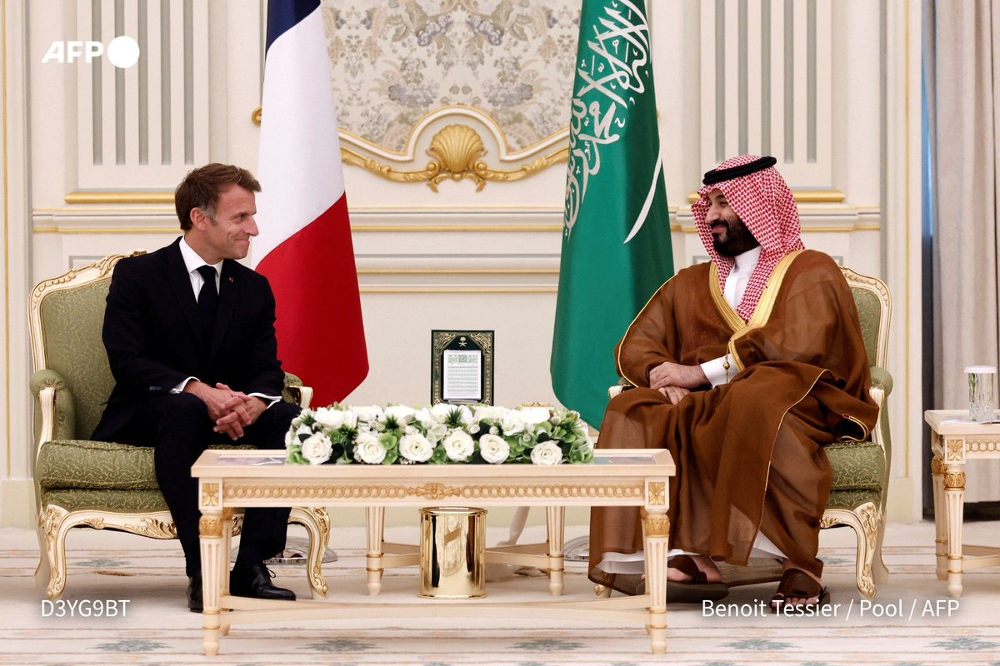
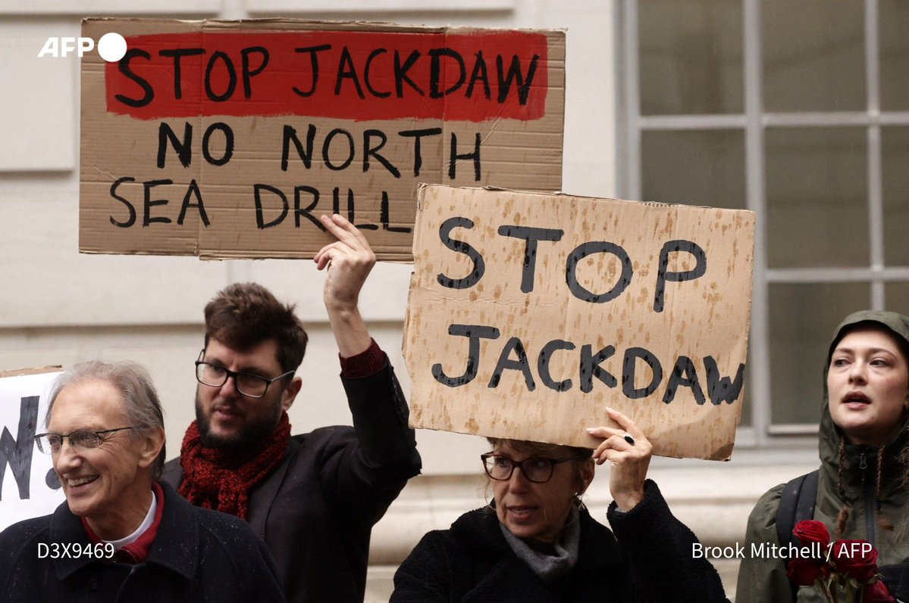

✈️ Barak Ravid (Axios) reports that dozens of Israeli fighter jets and refuelling planes flew a "power projection" sortie toward Iran on Monday, through Syrian and Iraqi airspace, turning back near the Iranian border. US officials said Israel told Washington in advance and called it a training exercise meant to deter Iran before the elections.
🤝 Diplomacy is still stalled. Reuters reports Iran told Pakistan's army chief there will be no talks with Washington until its demands are met. Iran's Nournews says a Qatari delegation reached Tehran, and Iran says Saudi Arabia and the Houthis haven't answered its mediation offer. Iraq shut the Sheeb crossing with Iran, citing a security review, and the US sanctioned Greek and Panamanian law firms for helping Iranian shipping.
🌍 Knock-on effects: Macron made a surprise "solidarity" visit to Riyadh after stepped-up Houthi attacks, Britain plans new North Sea gas drilling citing Iran-war price shocks, and UK police re-arrested two men suspected of spying for Iran over the RAF Fairford scare.

📷 AFP · North Sea gas plan🔇 A quiet day: the watched accounts posted no new Gaza or Hamas updates in the last 24 hours.
📍 Related: Reuters reports US Democratic congressional candidate Brad Lander was detained by the Israeli military in the occupied West Bank. 🗳️ Israel votes on Oct 27.